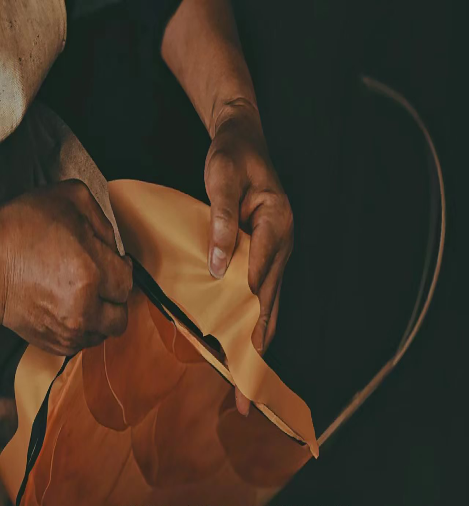
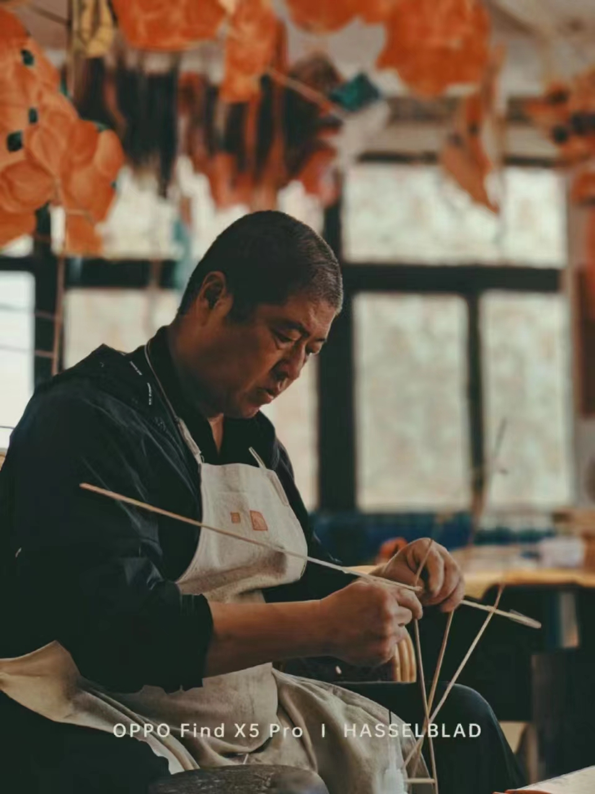
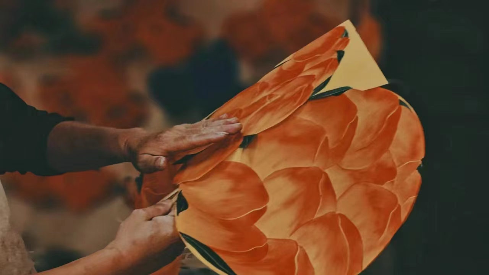

顶部
潍坊又称潍都,鸢都，制作风筝历史悠久，工艺精湛。用竹子扎制骨架，高档丝绢蒙面，手工绘画。工艺与美术的结合，体现了风筝的玩赏价值，随着国际风筝交流的逐渐频繁，风筝这一古老的民间艺术，在新形势下蓬勃发展，已经成为一种重要的艺术品。其种类有软翅类，硬翅类，龙头串式类板子类和立体桶子类等。它不仅被广泛用于放飞、比赛、娱乐，而且已经成为美化人们生活的时尚装饰品。风筝是潍坊的象征，每年的风筝节是潍坊以风筝拉动经济发展的一个活动。
潍坊风筝经过历史演变和横向传播，逐渐形成了选材讲究、造型优美、扎糊精巧、形象生动、绘画艳丽、起飞灵活的传统风格与艺术特色，和京式风筝、津式风筝等交相辉映，鼎足而立。
潍坊风筝具有浓郁的地方生活气息和生动的气韵，扎制博采众家之长，特别在风筝的造型结构和绘画色彩上，把制作木版年画的工艺移植到风筝上，把国画的传统技法，运用到风筝的绘制上，形成了造型优美、扎工精细、色彩艳丽的独特风格，成为中国风筝的一个重要流派。
选材讲究、造型优美、扎糊精巧、形象生动、绘画艳丽、品种繁多、起飞灵活。在中国的风筝家族中，潍坊风筝历史悠久，题材丰富、广博。以其材料的奇特选用，设计的夸张变形，画工的年画技法，以及放飞的巧用力学原理，构成了浓郁的乡土气息和独特神韵，蜚声古今中外。

民间风筝的制作者，多数是农民和手工艺人，一般说，在艺术上没有经过专门的训练。他们一般都是就地取材、蔑扎纸糊、不甚讲究，但风格粗犷、不矫揉造作，按照自 己对生活的直观感受和审美习惯，无拘无束地表达理想和愿望，他们的风筝，无论是造型、用料、色彩的配置和制作风格，都带有浓厚的乡土气息。

由于出现了卖风筝的生意，专职风筝艺匠也就应运而生。在潍坊历史上，甚至有不少知名画家也参与风筝的绘制乃至设计制作，使潍坊风筝中出现了十分考究的精品。传统艺匠派对潍坊风筝事业的发展，起到了良好的促进作用，它使潍坊风筝从一般的玩具，上升为有价值的工艺品，成为潍坊地方文化的重要组成部分。

到了现代，由于广大专业美术工作者、科技人员、工人、城镇居民踊跃参加风筝活动，充分发挥了现代工艺、现代科学技术的优势，在继承传统风筝的基础上，创造出了崭新的现代风筝。现代风筝的主要特点是重视新材料、新工艺的运用，造型简洁、明快、清新、巧妙，具有鲜明的时代性，受广大人民喜爱。